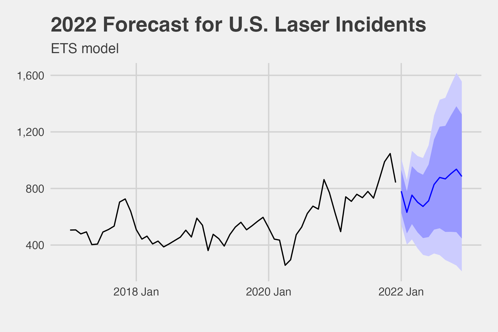

Plots
Total Laser Reports

Total Laser Injuries

Total Laser Reports by Altitude

Fixed-wing versus Helicopters
The original boxplot contained so many outliers that it could not be displayed in an insightful way. Since the altitude record for a fixed-wing, jet-propelled airplane was set in 1977 and was 123,520 feet and the altitude record for a rotorcraft or helicopter was set in 1972 and was 40,814 feet, it was obvious that the data included many errors. Outliers were omitted from the violin plot and the axis were rescaled to fit the .05 and .95 quantiles.

Total Laser Injuries

Total Laser Injuries by Altitude and Color

Calendar Heatmap
The absolute values or laser report count by day did not work well. Instead, the annual average was computed for each year and subtracted from the daily total. The difference was divided by the average incidents per day. In other words, the number was the number of deviations away from the mean.
Days that are bright red are days where the daily count greatly exceeded the annual average. November 5, 2020, was the day where the most laser incidents were reported over the entire period examined. The 54 incidents occurred on the day prior to November 6, 2020. That day was an election day for the U.S. presidency. (Trump-Biden).

Seasonal Plot
“A seasonal plot allows the underlying seasonal pattern to be seen more clearly, and is especially useful in identifying years in which the pattern changes.” [8]Here, laser incidents increase throughout the year reaching a high in October before declining.

Laser Incidents - Time of Day

Additive Decomposition
The method used for estimating components in this example is “STL” from the stats package. STL is a “versatile and robust method” for decomposing time series.[8] STL is an acronym for “Seasonal and Trend decomposition using Loess”.
The three components–trend, seasonal, and remainder– are shown separately in the bottom three panels. The components can be added together to obtain the data shown in the top panel.
The grey bars to the right of each panel show the relative scales of the components. Each grey bar represents the same length but because the plots are on different scales, the bars vary in size. If the bottom three panels were reduced until their size was identical to the bar in the data panel, then all the panels would be scaled the same.[8]

Forecast
Five forecasting models were fit to the data. The models were naive, seasonal naive, mean, ets and arima. When ranked by the mean average error, the ets model had the best fit. The forecast for the next 12 months of laser incidents yielded the following plot:
